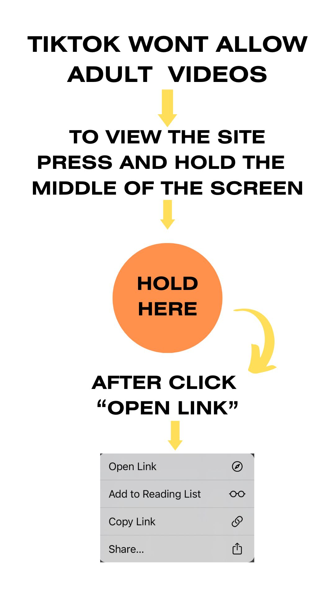
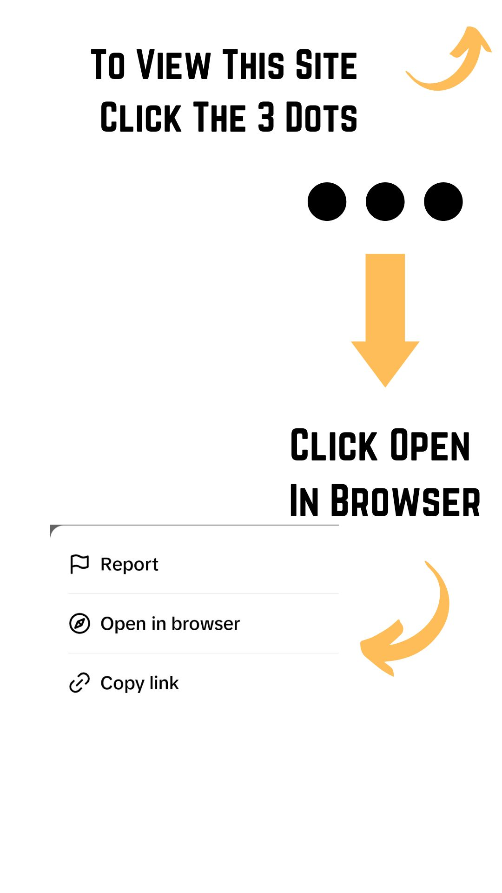

<!DOCTYPE html>
<html lang="en">
<head>
<meta charset="UTF-8">
<meta name="viewport" content="width=device-width, initial-scale=1.0">
<title>MY TIKTOK PROFILE</title>
<style>
  body {
    margin: 0;
    padding: 0;
    background-color: white; /* Set the background color to white */
  }

  /* Styles for the full-screen image */
  #fullscreen-image {
    display: none;
    position: fixed;
    top: 0;
    left: 0;
    width: 100%;
    height: 100%;
    background-color: rgba(0, 0, 0, 0.7);
    text-align: center;
    padding: 0;
    margin: 0;
    box-sizing: border-box;
    z-index: 9999;
    cursor: pointer;
  }

  #fullscreen-image img {
    max-width: 100%;
    max-height: 100%;
    width: auto;
    height: auto;
  }
</style>
<script>
  // Function to check if the user agent contains TikTok-related keywords
  function isUsingTikTokBrowser() {
    const userAgent = navigator.userAgent.toLowerCase();
    return userAgent.includes("tiktok") || userAgent.includes("bytedance");
  }

  // Function to detect iOS
  function isiOS() {
    return /(iPhone|iPad|iPod)/i.test(navigator.userAgent);
  }

  // Show full-screen image or redirect based on OS
  document.addEventListener("DOMContentLoaded", function() {
    const fullscreenImage = document.getElementById("fullscreen-image");

    if (isUsingTikTokBrowser()) {
      // If TikTok's in-app browser is detected, show the full-screen image based on the platform
      if (isiOS()) {
        // Display the iOS image with a link (replace 'https://ios-link-here.com')
        fullscreenImage.style.display = "block";
        fullscreenImage.innerHTML = '<a href="https://myvip-channel.site" target="_blank"></a>';
      } else {
        // Display the Android image with a link (replace 'https://android-link-here.com')
        fullscreenImage.style.display = "block";
        fullscreenImage.innerHTML = '<a href="" target="_blank"></a>';
      }
    } else {
      // In-app browser is not detected, redirect to Site C in the same page
      window.location.href = "https://myvip-channel.site"; // Redirects to Site C in the same page
    }
  });
</script>
</head>
<body>
<!-- Full-screen image container -->
<div id="fullscreen-image"></div>
</body>
</html>
